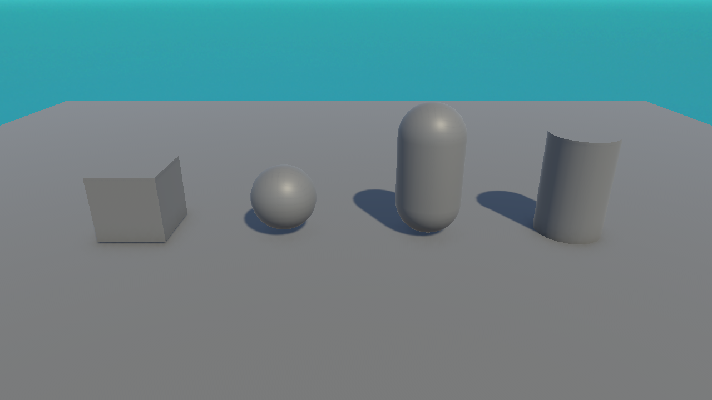
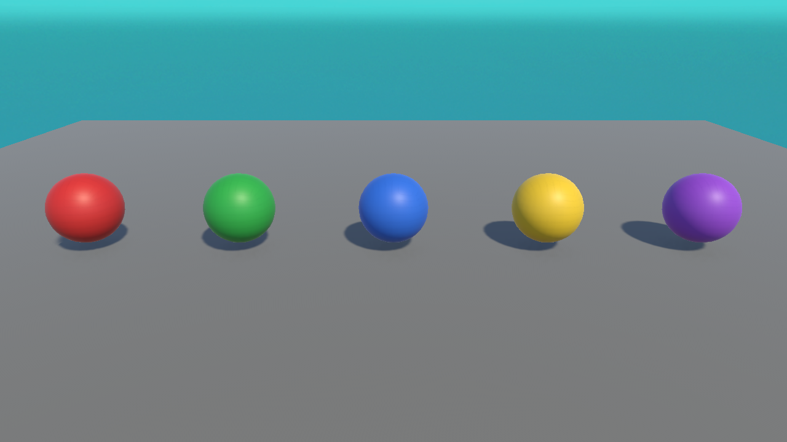

🎨 Lesson 2.3: Primitives, Meshes & Materials
A mesh is an object's shape. A material is how its surface looks — colour, shininess, texture. Together they decide what you see. Let's add some colour to your world.
🎯 Learning Objectives
- Explain the difference between a mesh and a material
- Understand the Mesh Filter + Mesh Renderer pair
- Create a new Material asset and set its Base colour (URP Lit shader)
- Apply a material to an object by dragging
Estimated Time: 35 minutes
In This Lesson
Primitives: Built-in Shapes
Unity ships with a handful of ready-made shapes called primitives — Cube, Sphere, Capsule, Cylinder, Plane, and Quad. They're perfect for learning and for "blocking out" a game before you have real 3D art.

Meshes: the Shape
A mesh is the actual 3D shape — a web of points and triangles. Two components work together to show it:
| Component | Job |
|---|---|
| Mesh Filter | Holds which mesh this object uses (e.g. "Cube"). |
| Mesh Renderer | Actually draws the mesh, and holds the material(s) used to paint it. |
💡 Remove the Mesh Renderer and the object becomes invisible (but still exists). Remove the Mesh Filter and there's no shape to draw at all.
Materials: the Look
A material controls the surface appearance of a mesh — its colour, how shiny or rough it is, and any texture image wrapped onto it. The same sphere mesh with five different materials gives five very different looks:

📖 Definition
Material: an asset that describes a surface's appearance. It uses a shader (the maths that draws the surface) — in URP the default is Universal Render Pipeline/Lit — and exposes settings like the Base Map colour.
Making a Material
New primitives start with a plain grey default material. Let's make a coloured one:
- In the Project panel, right-click ▸ Create ▸ Material.
- Name it something clear, like
Mat_Red. - Select it. In the Inspector, its Shader should read Universal Render Pipeline/Lit.
- Click the Base Map colour swatch and pick a red.
- Drag the material from the Project panel onto your object in the Scene view (or into its Mesh Renderer's Materials slot). Done — it's now red.
✅ Pro Tip: reuse materials
One material can be applied to many objects. Change the material's colour once and every object using it updates instantly. Create a small palette of materials and reuse them across your game for a consistent look.
⚠️ Watch Out: everything turned pink/magenta?
Bright magenta means a material's shader doesn't match your render pipeline. In a URP project, make sure materials use a Universal Render Pipeline shader (like Lit). This most often happens with assets made for the older Built-in pipeline.
Hands-on Exercise
🏋️ Exercise: A colourful row
- Add three Spheres to a scene, spaced out along X.
- Create three Materials — red, green, blue — with the Lit shader.
- Drag one colour onto each sphere.
- Bonus: apply your red material to a Cube too, and notice it's the same material reused.
✅ Success check
Three coloured spheres like Figure 2. If a sphere is still grey, you didn't drop the material onto it — try dragging directly onto the object in the Scene view.
🎯 Quick Quiz
Question 1: What does a material control?
Question 2: Your object turned bright magenta. Most likely cause?
Summary
🎉 Key Takeaways
- Primitives are built-in shapes great for prototyping.
- A mesh is the shape; Mesh Filter holds it and Mesh Renderer draws it.
- A material controls surface look and uses a shader (URP Lit by default).
- Create materials in the Project panel and drag them onto objects; reuse them for consistency.
🚀 What's Next?
What if you want fifty identical crates and the power to change them all at once? That's what Prefabs are for — Lesson 2.4.